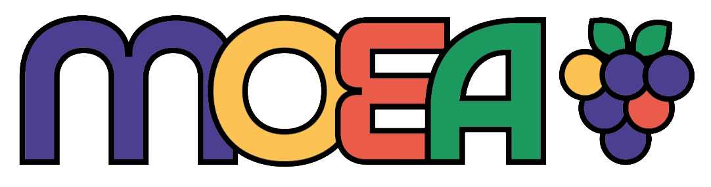

Dans le cadre de la partie pratique du second BTS Blanc de première année, nous avons eu pour exercice de réaliser un logo pour une marque fictive, MOEA.
Il s'agit d'une marque de chaussures fabriquées à partir de déchets alimentaires recyclés. Il était fortement conseillé d'utiliser des éléments rappelant les fruits.

La réalisation de ce logo s'est déroulée entièrement sur Adobe Illustrator. Le dossier joint détaille les étapes de construction et les choix colorimétriques effectués.
Le contour noir appliqué à l'ensemble des éléments facilite son application sur tous les supports de communication.
La police d'écriture a été choisie pour son aspect minimaliste, bien que le bilan souligne des axes d'amélioration.
Cet exercice m'a permis de travailler sur une identité visuelle éco-responsable et ludique ; je n'ai cependant pas assez reflété la modernité dans le choix de la typographie.